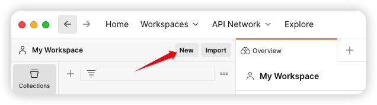
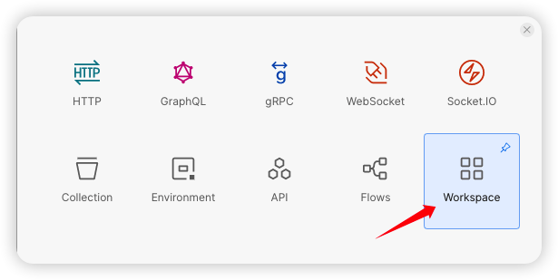
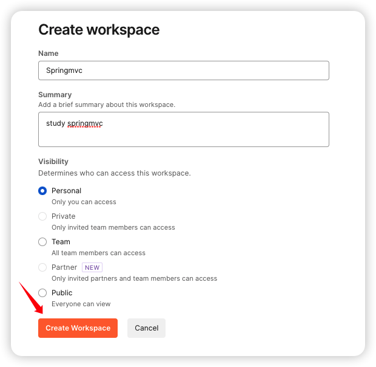
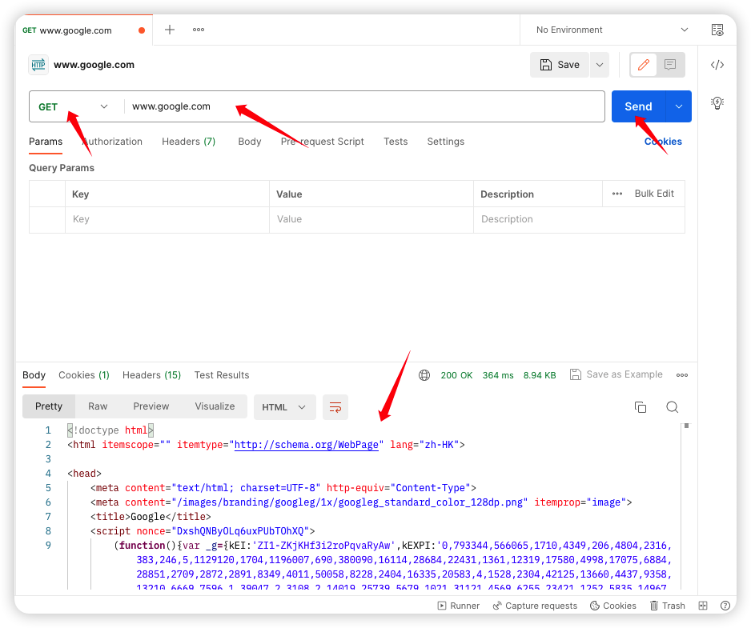

网页调试工具PostMan
PostMan是一款功能强大的网页调试与发送网页HTTP请求的Chrome插件，常用于进行接口测试。
PostMan简介
代码编写完后，我们要想测试，只需要打开浏览器直接输入地址发送请求即可。发送的是GET请求可以直接使用浏览器，但是如果要发送的是POST请求呢？如果要求发送的是post请求，我们就得准备页面在页面上准备form表单，测试起来比较麻烦。所以我们就需要借助一些第三方工具，如PostMan。
PostMan安装
注册一个账号直接来到这个界面：

PostMan使用
创建WorkSpace工作空间
  
发送请求
也可以请求访问我们在Tomcat返回的页面：


保存当前请求

本博客所有文章除特别声明外，均采用 CC BY-NC-SA 4.0 许可协议。转载请注明来源 KiCheng's Blog！